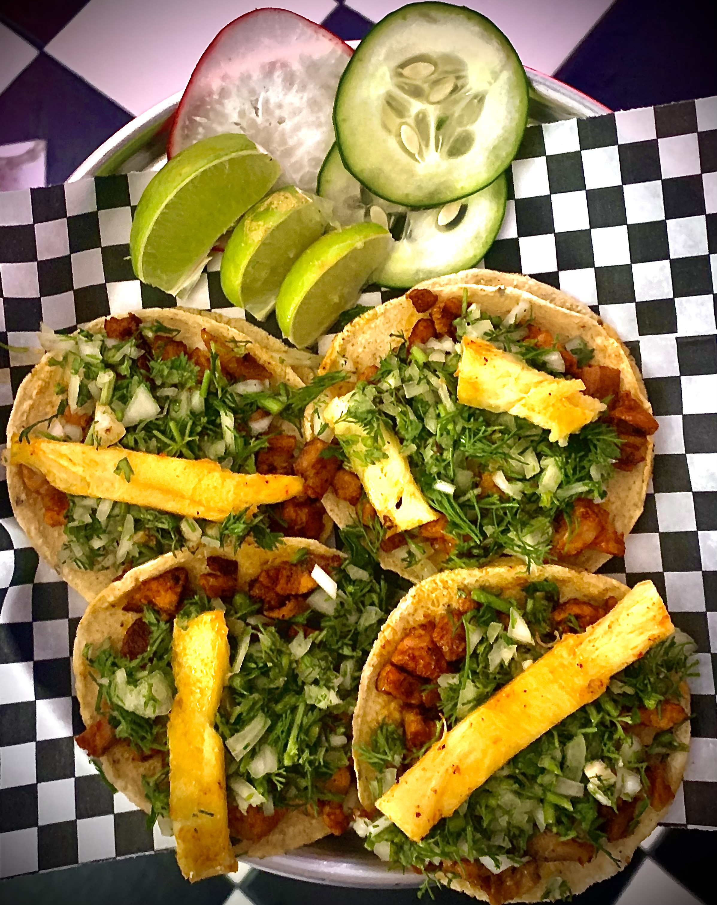

Menú
-

Taco al Pastor
Delicioso taco de cerdo marinado, servido con piña y cilantro.
-

Taco de Tripa
Taco de tripa crujiente, perfecto para los amantes de los sabores intensos.
-

Taco de Birria
Exquisito taco de carne de res en su jugo, acompañado de cebolla y cilantro.
-

Taco de Cochinita Pibil
Taco de cerdo adobado, con el auténtico sabor yucateco.
-

Taco de Asada
Clásico taco de carne asada, con su toque perfecto de limón.
-

Taco Llanero
Especialidad de la casa, con una mezcla única de ingredientes.
-

Taco de Tinga de Pollo
Suculento taco de pollo desmenuzado, en salsa de tomate y chipotle.
Bebidas
- Aguas frescas de jamaica o tamarindo
- Horchata
- Bebidas gaseosas (Coca Cola, Quatro, Sprite)
- Agua con gas y sin gas
- Soda michelada
- Cerveza michelada
- Cerveza (Corona, Budweiser, Club Colombia)